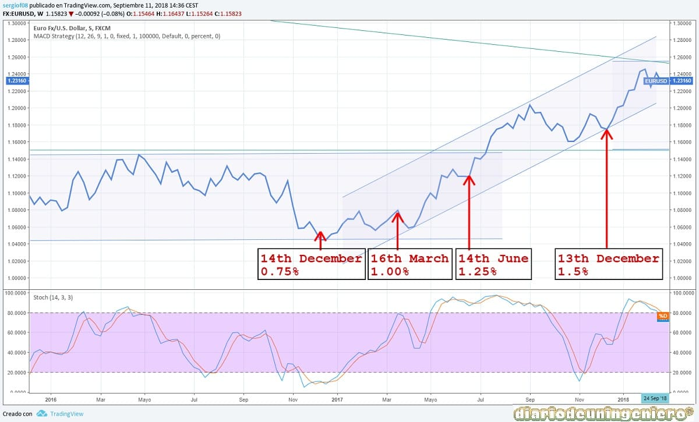
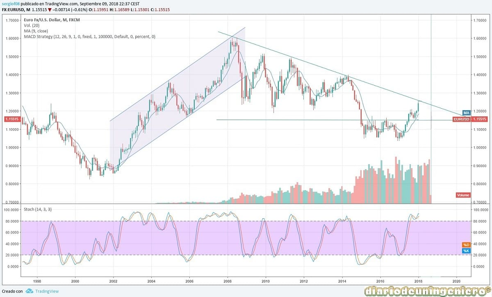

In 2015, the first change in interest rates was made in 7 years in the United States. One year later, the rates would rise once more, having expected 2 rate hikes in the year, due to fears of creating an alarm in the economy that could give a result like the one of the 2008 crisis.
In 2015, the first change in interest rates was made in 7 years in the United States. One year later, the rates would rise once more, having expected 2 rate hikes in the year, due to fears of creating an alarm in the economy that could give a result like the one of the 2008 crisis.
In 2017, therefore, two to three rate hikes have been marked and finally there have been three rate hikes.
Donald Trump is opposed to this monetary policy and his opinion is not to alter them and devalue the dollar in order to be able to export more and not be affected by the devaluation of the Yuan. However, in the United States, the power of money is not decided by the president or the government, but by an independent body such as the Federal Reserve, which belongs to the Department of the Treasury.
Said this in the following table I show the different increases of types that have happened this year, being all of the 0.25 in order with the intentions of a progressive ascent. The president Yellen is not very appreciated by Trump and there have been several clashes in the last year although I already announced his intention to leave office.
| DATE | PORCENTAGE | 13th december 2017 | 1,50 % | 14th june 2017 | 1,25 % | 16th march 2017 | 1,00 % | 14th december 2016 | 0,75 % | 16th december 2015 | 0,50 % | 16th december 2008 | 0,250 % |
|---|
Due to the continued pace of growth in the United States, it is necessary to continue applying a rate hike according to inflation and job creation data and seeing the results will surely repeat three or four times next year. < br>
If we look at the rises in interest rates this year we can see how before the rise has been discounted by lowering the dollar and when the rise occurs the dollar has fallen in its change with the euro and other currencies. In this case only the euro shows the graph with the dollar but the dollar index is totally correlated with the change with the euro.

The only rise where the dollar rose a posteriori was that of 2015 in which an unprecedented rise in the dollar was recorded, with the dollar almost reaching parity with the euro. Anyway, that rise was discounting enough more increases but at the end of 2018 the currency exchange is totally manipulated since after being the rates at 2% almost and without a clear evidence of when rates will rise in Europe the rebound of the euro It seems scary. More when the ECB is still printing tickets and giving it to banks in the Euro zone at an interest rate of 0%.
It will be in 2018 when the dollar will rise again against the euro and the system will be corrected again, if we look at the long-term chart
So in December of this year Yellen , the president of the FED, announced the increase of another 0.25% in the types and remarked that next year there will be 3 uploads .
The following chart shows the long-term trend of the dollar and you can see how that downward trend of the euro with the change in the dollar could change if it exceeds the line thing that at the end of 2017 is about to do. This seems unlikely so I will most likely correct and return to the first base of the channel, 1.15 points .

© 2016 - All Rights Reserved - Diseñada por Sergio López Martínez
![[Valid RSS]](https://www.feedvalidator.org/images/valid-rss-rogers.png "Validate my RSS feed")